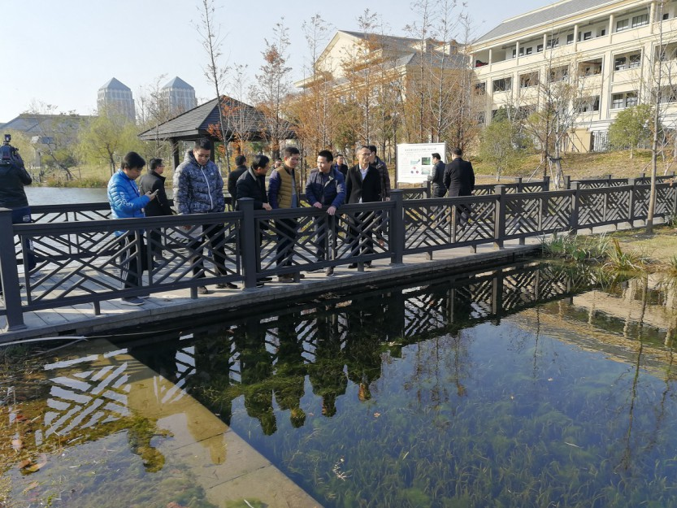

力求实现“水清岸美有文化鱼跳鸟飞人欢畅”的美好愿景
河水清澈见底，河岸草木葱茏……走近位于秀洲国家高新区的范家浜，映入眼帘的是河道生态修复的新成果。2018年，像范家浜这样的美丽河道将更多地出现在秀洲大地。
记者从昨天召开的秀洲区“美丽河湖”创建工作现场会获悉，2018年，秀洲区在全面推进美丽河湖创建行动中，将充分结合美丽乡村、小城镇环境综合治理和北部湖群整治等工作，通过污染治理、生态环境修复、景观打造、文化提升等一系列措施，促进河湖休养生息，维护河湖健康生命，基本实现全区河流水环境质量大幅改善，水生态安全得到保障，水景观文化得到提升，管护机制得到健全。
在全面完成剿劣任务后，如何深入推进“五水共治”工作，切实巩固提升治水成果？秀洲区将工作重点放在了“美丽河湖”建设上。2017年，秀洲区加强河流生态化治理，加大水生态保护与修复力度，开展驳岸生态化改造、沿岸绿化及景观建设，加快河岸湿地、曝气充氧、生态浮床等工程建设，重新构建了物种丰富、结构完整、功能稳定的河道、池塘生态系统，稳步改善水质。

数据显示，截至目前，秀洲区投入近3800万元，完成了新城街道范家浜，高照街道吴家木桥港、油车港陶家桥港、杭州塘秀洲段等11条河道的生态景观河道治理任务，大大提升了区域河道生态修复能力。
2018年，秀洲区将全面推进美丽河湖创建行动。该区将结合新塍镇潘家浜、王店镇聚宝湾等A级以上美丽乡村建设工作，重点推进2018年度全区18个美丽乡村的美丽河湖创建工作，有条件的要实现美丽河湖建设全覆盖。同时，结合全区小城镇环境综合治理工作，重点推进城(镇)区范围内穿越城镇或居民聚集区等重要河道的美丽河湖创建工作。2018年，每个镇和街道至少开展3条以上河道的美丽河湖创建工作，力争明年8月底前全面完成治理任务。
根据要求，美丽河湖治理内容应以修复河道生态系统和沿岸截污纳管工作为主。治理后需达到河道生态系统良好，水质在四类水及以上，水体透明度达80厘米以上等要求，做到“水下无淤积、水中无障碍、水上无漂浮、岸边无垃圾、岸堤有绿化”。
穿越城镇及居民聚集区的河道，有条件的应设置慢行道(游步道、绿道)及亲水平台、亲水台阶等完善的亲水便民设施；优化沿岸绿化和景观小品布置，彰显城市品位。建设过程中，要尽量挖掘以水为载体的先进文化，要求能反映地方水文化特色及社会主义核心价值观；同时，要注重与水工程相关的古桥、古堰、古码头等的保护与修复工作。
区“五水共治”办要求，各级责任河长要严格按照河道巡查、保洁、维修养护管理办法及相关标准要求，保证河道周边设施功能良好，河道保洁全覆盖，河面无漂浮物；完成河道管理保护范围的划定及界桩、界牌、警示牌、等标识标牌设置工作。